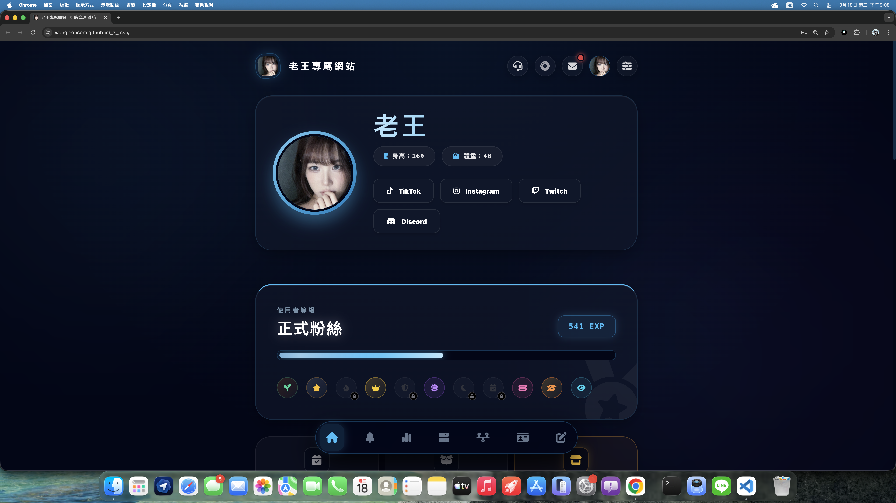
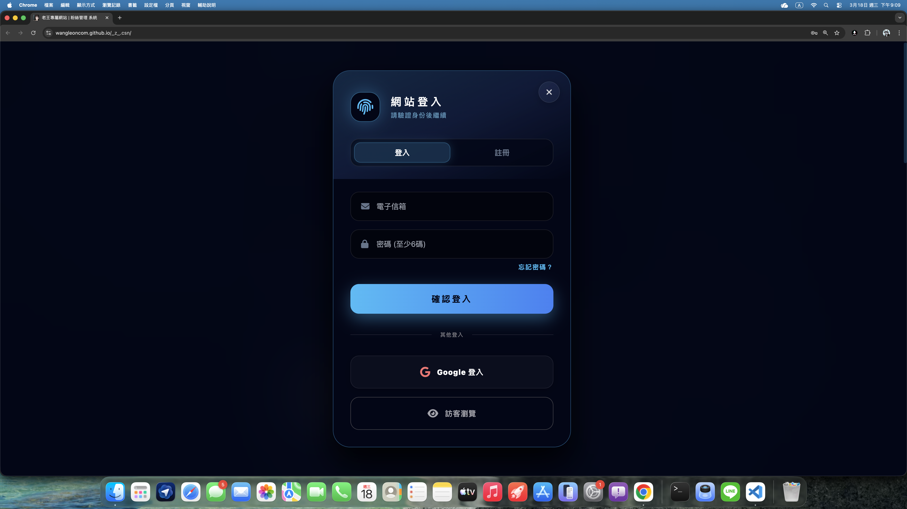
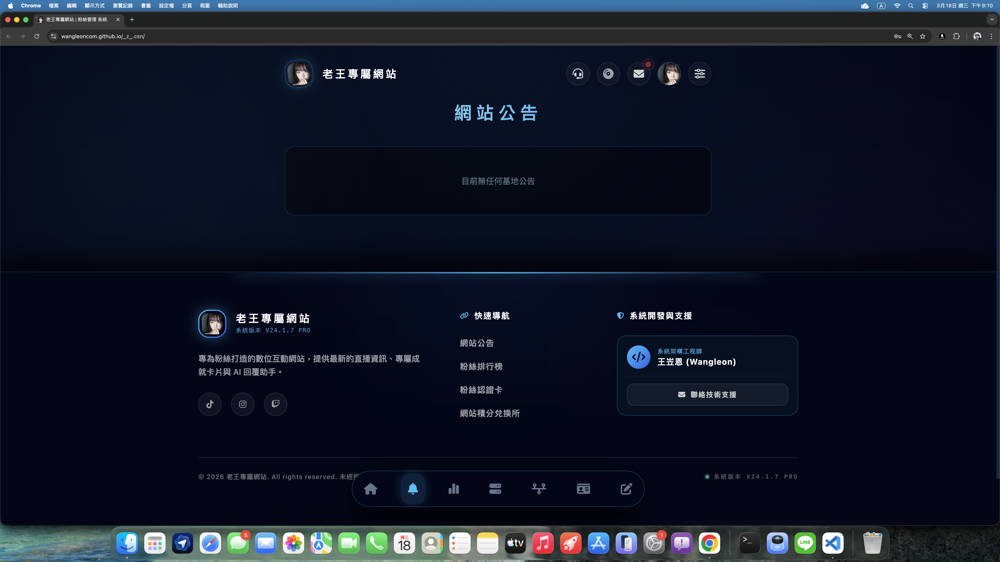
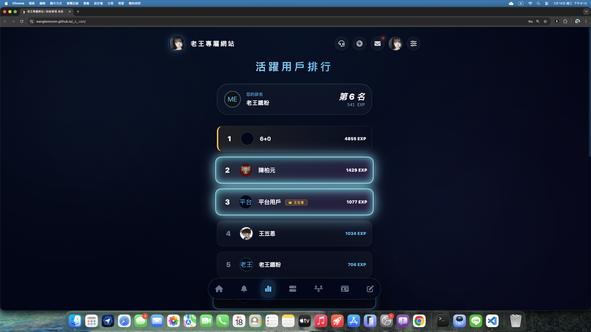
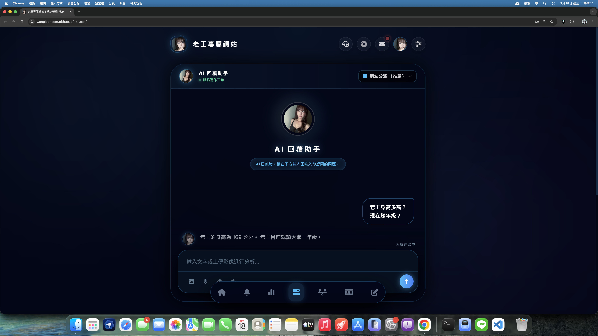
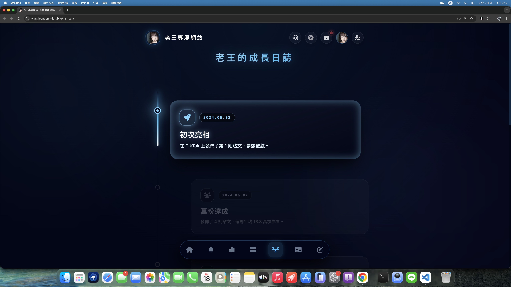
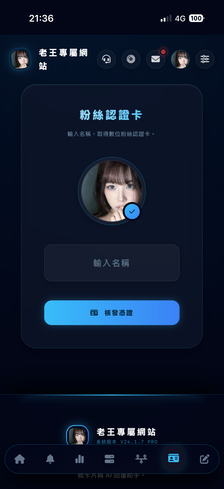
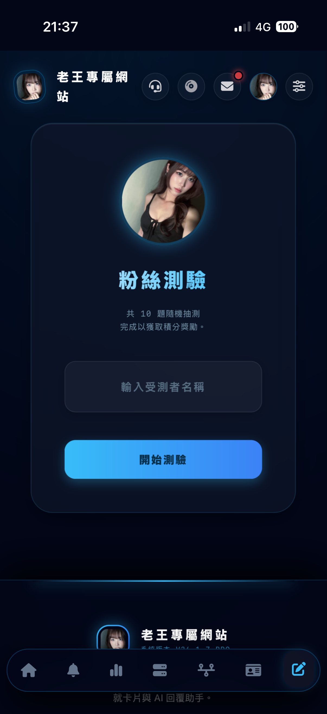
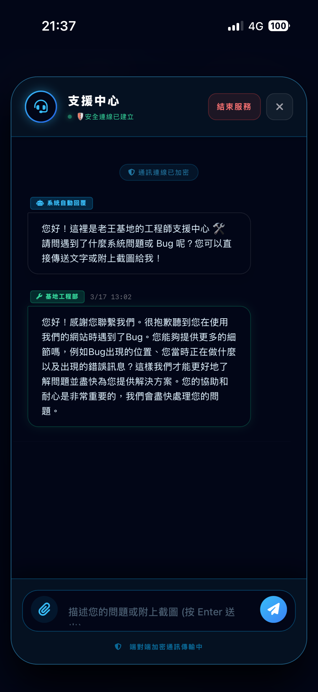

PROJECT_ID: LAO_WANG_V2
老王的粉絲網站
打破傳統框架的社群管理系統。透過自研架構，將單純的資料庫升級為具備成長感、互動感與安全感的全方位數位平台。

/ CORE_FEATURES
系統核心亮點
01
完整登入與註冊系統
支援傳統信箱密碼驗證，並整合 Google 一鍵快速登入。提供粉絲極致流暢的開箱體驗，同時嚴格把關帳號的資訊安全。

02
即時動態公告系統
管理員能透過加密的高權限後台，一鍵推播最新直播資訊、活動預告與重要通知，確保粉絲不會錯過任何重要訊息。

03
活躍用戶排行榜
導入深度的遊戲化 EXP 經驗值機制。系統即時運算並更新活躍排行，賦予粉絲榮譽感，大幅提升社群的黏著度與互動意願。

04
最懂老王的 AI 助手
內建專屬訓練的 AI 回覆機器人，擁有老王的專屬知識庫。能以極高的準確度自動解答粉絲的常見問題，釋放管理員的雙手。

05
老王的成長日誌
完整記錄老王從初次亮相到萬粉達成的里程碑。透過視覺化時間軸，見證主播的成長紀錄。

06
專屬粉絲認證卡
透過程式碼底層動態渲染，為每一位使用者生成獨一無二的數位認證卡，增強社群歸屬感並完美適應社群媒體分享。

07
互動式粉絲測驗
精心設計的 Q&A 問答測驗模組，考驗粉絲對主播的了解程度。完成測驗即可解鎖隱藏成就與經驗值獎勵。

08
後台工程師支援中心
我們打造了專業的客服對話介面。當系統出現問題時，能透過加密對話管道直接與工程師聯絡，並支援圖片上傳，讓除錯更快速精準。
